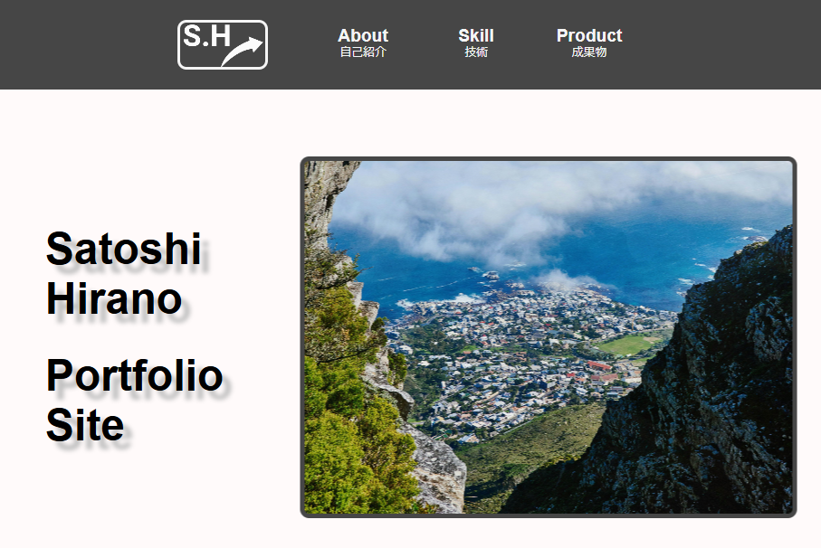

Product

ポートフォリオサイト
・2025年1月作成
・HTML/ CSS/ JavaScript/ VSCode/ Figma/ Git
2024年10月からフロントの研修を始め、約3か月間の集大成で取り組みました。自分の要点と今の技術力が伝わるように、シンプルな構成とレスポンシブデザインを意識して作成しました。
source code・2025年1月作成
・HTML/ CSS/ JavaScript/ VSCode/ Figma/ Git
2024年10月からフロントの研修を始め、約3か月間の集大成で取り組みました。自分の要点と今の技術力が伝わるように、シンプルな構成とレスポンシブデザインを意識して作成しました。
source code